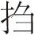

（丑上）北地秋深带早寒，白头祖籍住邯郸。开张村务黄粱饭 [1] ，是客都谈处世难。小子在这赵州桥北开一个小小饭店，这店前店后田庄，半是范阳镇卢家的，他家往来歇脚，在我店中。也有远方客商，来此打火 [2] 。目今点心时分 [3] ，看有甚人来？（吕背褡袱枕笑上）一粒粟中藏世界，半升铛里煮乾坤。 [4] 贫道打从岳阳楼上，望见一缕青气，竟接邯郸。迤逦寻来，原来此气落在邯郸县赵州桥西卢生之宅。贫道即从人中观见卢生，相貌精奇古怪，真有半仙之分，便待引见而度之。则为此人沉障久深 [5] ，心神难定。因他学成文武之艺，未得售于帝王之家。以此落落，其人闷闷而已，此非口舌所能动也。（想介）则除是如此，如此，才有个醒发之处。俺先到店窝儿候他也。
【锁南枝】 青蛇气 [6] ，碧玉袍，按 下了云头离碧霄。蓦过赵州桥，蹬上这 邯郸道。（内鸡鸣犬吠介）（吕）好一座村庄，犬吠鸡鸣，颇堪消遣。（丑见介）客官请坐。（吕） 俺把 担囊放，尘榻高。比那 岳阳楼近多少？
（丑）道丈何来？（吕）我乃回道人 [7] ，借坐一会。（背介）那人骑一匹青驴驹来也。（噀诀介） [8] 那驴儿鸡儿犬儿和那尘世中一班人物，但是精灵合用的，都要依吾法旨听用，不得有违。敕！ [9]
【前腔】 （生短裘鞭驴上） 风吹帽，裘敝貂，短 秃促青 驴鞲断了梢 [10] 。（丑）卢大官人。（生） 町疃里 一周遭 [11] ，那 辘轴畔 谁相叫 [12] ？原来邸舍中主人。我且坐一会去，驴系这桩橛上，吃些草。（丑）知道了。（生见吕介） 轻提手，当折腰。但相逢，这 面儿好。
（生）店主人，这位老翁何处？（丑）回回国来的 [13] 。（生）老翁容貌，不像回回。（吕）贫道姓回，从岳阳楼过此。足下高姓？（生）小子卢生是也。久闻的个岳阳楼，景致何如？（吕）有《岳阳楼记》一篇，略表白几句你听：“夫巴陵胜状，在洞庭一湖。衔远山，吞长江；浩浩汤汤，横无际涯；朝晖夕阴，气象万千。此则岳阳楼之大观也。北近巫峡，南极潇湘，仙客骚人，多会于此。览物之情得无异乎？若夫霪雨霏霏，连月不开；阴风怒号，浊浪排空；日星隐曜，山岳潜形；商旅不行，樯倾楫摧；薄暮冥冥，虎啸猿啼。登斯楼也，则有去国怀乡，忧谗畏讥，满目潇然，感极而悲者矣。至若春和景明，波澜不惊；上下天光，一碧万顷；沙鸥翔集，锦鳞游泳；岸芷汀兰，郁郁青青。而或长烟一空，皓月千里；浮光跃金，静影沉璧；渔歌互答，此乐何极。登斯楼也，则有心旷神怡，宠辱皆忘，把酒临风，其乐洋洋者矣！”（生）好景致也！老翁记的恁熟，讽诵如流，可到了几次？（吕）不多，三次了。有诗为证：朝游碧落暮苍梧，袖有青蛇胆气粗。三过岳阳人不识，朗吟飞过洞庭湖 [14] 。（生）老翁好吟咏也。则朝游碧落暮苍梧，苍梧在南楚地方。碧落在那里？（吕）若论碧落路程，眼前便是。（生笑介）老翁哄弄庄家哩 [15] 。（吕）这等，且说今年庄家如何？（生）谢圣人在上，去秋庄家，一亩打七石八斗；今岁整整的打勾了九石九哩。（吕）这等你受用哩。（生笑介）可是受用了。（生忽起，自看破裘叹介）大丈夫生世不谐，而穷困如是乎？（吕）观子肌肤极腴 [16] ，体胖无恙，谈谐方畅，而叹穷困者，何也？
【前腔】 你 身无恙，生事饶 [17] ，旅舍里 相逢如故交。畅好的 不妆乔 [18] ，正用欢言笑。因何恨？不自聊。叹孤穷还待 怎生好？
（生）老翁说我谈谐得意，吾此苟生耳，何得意之有！（吕）此而不得意，何等为得意乎？（生）大丈夫当建功树名，出将入相，列鼎而食 [19] ，选声而听 [20] ，使宗族茂盛而家用肥饶，然后可以言得意也。
【前腔】 俺呵 身游艺，心计高，试 青紫当年如拾毛 [21] 。到如今呵，俺 三十算齐头，尚走这 田间道。老翁 有何畅，叫俺 心自聊？你道俺 未称穷，还待 怎生好？
（生作痴介）我一时困倦起来了。（丑）想是饥乏了，小人炊黄粱为君一饭。（生）待我榻上打个盹。（睡介）少个枕儿。（吕）卢生，卢生，你待要一生得意，我解囊中赠君一枕。（开囊取枕与生介）
【尾声】 看你 困中人无智把 精神倒，你枕此枕呵， 敢着你 万事如期意气高。店主人， 你去 煮黄粱要他美甘 甘清睡个 饱。（吕下）（生作睡不稳介）（看枕介）
【懒画眉】 这枕呵，不是 藤穿刺绣锦编牙，好则是 玉切香雕体势佳。呀，原来是 磁州烧出的 莹无瑕，却怎生 两头漏出通明罅 [22] ？（抹眼介） 莫不是 睡起瞢瞪眼挫花 [23] ？
（瞧介）有光透着房子里，可是日光所照。
【前腔】 则这 半间茅屋甚光华，敢则是 落日横穿一线斜？须不是俺 神光错摸眼麻查 [24] ？待我起来瞧着。（起向鬼门惊介） 缘何 即留即渐的 光明大 [25] ，待俺 跳入壶中细看他。
（做跳入枕中）（枕落去）（生转行介）呀，怎生有这一条齐整的官道？（行介）好座红粉高墙。
【朝天子】 一径香风软碧沙，粉墙低转处有人家。门开在这里，待我蓦将进去。 闪铜环呀的 转帘牙。满庭花，重重帘幕锁烟霞。甚公侯贵衙？甚公侯贵衙？
门帘以内，深院大宅了。门儿外瞧着：前面太湖石山子，堂上古画古琴，宝鼎铜雀，碧珊瑚，红地衣。
【前腔】 堂院清幽摆设的 佳，似 有人朱户里，小窗纱。（内叫介）什么闲人行走？快拿！快拿！（生慌介） 急 回廊怕的 惹波查 [26] 。（内叫介）掩上门，快拿！快拿！（生慌介）怎生好？门又闭了。且喜旁边有芙蓉一架。可以躲藏。 省喧哗，如鱼失水旱莲花。且低回首自家，且低回首自家。
（老旦上叫介 [27] ）那人何处也？小姐早上。
【不是路】 （旦引贴上 [28] ） 浪影空花，陌上香魂不住家。仙灵化，差排门户粉胭搽。（旦）奴家清河崔氏之女是也 [29] 。这两个：一个是老妈，一个是梅香 [30] 。住这深院重门，未有夫君。谁到帘栊之下，走藏何处也？（老） 影交加，那人呵， 多应躲在芙蓉架。（叫介）那汉子还不出来， 拿去官司打折了他。（生作怕慌上介）休要拿，小生在此。（老）甚么寒酸，还不低头！（捉生低头跪介）（老）俺这 朱门下，穷酸恁的无高下，敢来行踏，敢来行踏 [31] ！（旦）
问汉子何方人氏？姓甚名谁？
【前腔】 （生） 黄卷生涯，卢姓山东也 是旧家。闲停踏，偶然迷误到尊衙。（旦）家中有甚么人？（生） 自嗟呀，也无妻小无爹妈，长则是 向孤灯守岁华。（老）你没有妻子，在这里狗头狗脑。（生）小生怎敢！ 须详察，书生老实知刑法，敢行调达 [32] ？敢行调达？
（旦）叫那汉子抬头。（生）不敢。（老）小姐恕你抬头。（生瞧介）原来是个女郎。（老）咄！
【前腔】 （旦）俺 世代荣华，不是寻常百姓家。你 行奸诈，无端窥窃上阳花 [33] 。（生）不敢。（旦）梅香和俺快行拿。（贴）没有索子。（旦） 秋千索子上高悬挂。（贴）没甚么行杖。（旦）  杖鼓的 鞭儿和俺 着实的 挝 [34] 。（生）苦也！苦也！（老）要饶么？（生）可知道要饶。（老）这等，汉子叩头吿饶。（旦）非奸即盗，天条一些去不的 [35] 。老妈妈则问他私休？官休？私休，不许他家去，收他在俺门下，成其夫妻；官休，送他清河县去。（老对生介）替你吿饶了。小姐分付：官休？私休？私休，不许你家去，收留你在这里，与小姐成其夫妻；官休，送你清河县去。（生）情愿私休。（老）一让一个肯。（回介）禀小姐：秀才情愿私休。（旦）这等，恕他起来。（老）小姐放你起来。（生起笑）（旦看羞介）老妈快下了帘儿，俺好看他不上。 酸寒煞，你引他去， 回廊洗浴更衣罢，再来回话，再来回话。
（老）秀才，小姐分付：回廊外香水堂洗澡去。（生笑介）好不掯人 [36] ，既在矮檐下，怎敢不低头。（下）
【前腔】 （老引生上） 这 香水浑家 [37] ，把俺 涤爪修眉刷净了牙。（老）便道是你浑家，还早哩。相抬刮 [38] ，这 阶前跪下手儿叉。（生拱立，老回话介）禀小姐：那汉子洗浴更衣了。（旦）那人怎么？（老） 尽风华，衣冠济楚多文雅。（旦低问介）内才怎的？（老低笑介） 便是 那话儿 郎当 [39] ，你可也 逗着他。（旦笑介） 休胡哈 [40] ！梅香卷帘。（贴卷帘介）（旦） 俺 盈盈暮雨，快把这 湘帘挂。（生跪，旦扶起介） 男儿膝下，男儿膝下。
（旦）卢生，卢生，奴家怜君之贫，收留你为伴，无媒奈何？（老）老身当媒，佳期休误。（内鼓乐）（老赞拜介 [41] ）（贴）新人新郎进合欢之酒。（旦把酒介）
【贺新郎】 羞杀儿家，早莲腮映来杯斝 [42] ，骤生春满堂如画。人潇洒，为甚么 闲步天台看晚霞？拾的个阮郎门下 [43] 。低低笑，轻轻哈，逗着文君寡。（合） 云雨事 [44] ，休惊怕。
【前腔】 （生） 三十无家，邯郸县偶然存箚 [45] ，坐酸寒衣衫藞苴 [46] 。妆聋哑，谁承望 颠倒英雄在绛纱，无财帛，单枪入马。能粗细，知高下，你稳着心儿把。（合前）
（老旦）好夫妻进洞房花烛。（行介）
【节节高】 崔卢旧世家，两韶华，偶逢狭路通情话。教洗刮 [47] ，没争差 [48] ，无喇塌 [49] 。帽儿抺的光光乍，灯儿照的娇娇姹。崔家原有旧根牙 [50] ，卢郎也不年高大。
【前腔】 天河犯客槎 [51] ，猛擒拿，无媒织女容招嫁 [52] 。休计挂，没嗟呀，多喜洽。檀郎蘸眼惊红乍 [53] 。美人带笑吹银蜡。今宵同睡碧窗纱，明朝看取香罗帕。
【尾声】 果然是春无价，盼 暮雨为云初下榻。（旦）卢郎呵， 这是俺和你五 百岁因缘到了家。
偶然高筑望夫台，伥伥书生走入来
[54]
。
今夜不须磁作枕，轻抽玉臂枕郎腮。
[1] 村务：指乡村里的酒店。元无名氏《仙吕·村里迓彭·四季乐情》：“村务内海初熟，恰归来半醉黄昏后，暮雨收，牧童儿归去倒骑牛。”
[2] 打火：生火、烧火。这里指人出门在外，旅途休息吃饭或者做饭。古时有打火店，旅客可自做一些简单的饭菜。
[3] 点心：指正餐前吃的食物，后指吃饭。
[4] “一粒”句：引唐吕岩《七言》诗：“一粒粟中藏世界，二升铛内煮山河。”铛（chēng）：古代一种温酒器。
[5] 沉障：不醒悟，蔽塞。
[6] 青蛇气：剑仙气。青蛇，古剑名。唐元稹《说剑》：“白虹坐上飞，青蛇匣中吼。”
[7] 回道人：又称回处士、回老。吕洞宾的别称。《吕帝圣迹纪要·长沙警释》：“吕帝游长沙，托为回道人。”《吕帝圣迹纪要大云会食》：“吕帝托为回处士游大云寺。”宋《云麓漫钞》卷一：“饱闻回老榴皮字，试问溪头鹤发翁。”
[8] 噀（xùn）决：念口诀。噀，喷。
[9] 敕（chì）：本指中国古代帝王诏令文书的文种名称之一。这里指自上而下的命令，一般在句尾。
[10] 短秃促：骂人语，指毛发短而稀疏。
[11] 町疃（dǐngtuǎn）：村舍旁的空地。町，田间小路。疃，村舍。《诗经·豳风·东山》：“町疃鹿场。”
[12] 辘轴：亦称“轱辘”，是古代安在井上绞起汲水斗的工具。
[13] 回回国：古国名。回回，回族，信奉伊斯兰教。
[14] “朝游”四句：出自唐吕岩《绝句》。
[15] 庄家：庄家人。元杜仁杰《耍孩儿·庄家不识勾栏》：“风调雨顺民安乐，都不似俺庄家快活。”
[16] 腴（yú）：丰腴。
[17] 生事饶：生计还丰饶，没有衣食之忧。
[18] 妆乔：即装腔作势。《警世通言·吕大郎还金完骨肉》：“吕宝得了银子，向客人道：‘家嫂有些妆乔，好好里请他出门，定然不肯。’”
[19] 列鼎而食：吃饭排场大，比喻食物丰盛。《孔子家语》：“累茵而坐，列鼎而食。”
[20] 选声而听：选择好听的音乐来听。《礼记·乐记》：“君子之听音，非听其铿锵而已，彼亦有所合也。……故君子选声而听。”
[21] 青紫：公卿的服饰。《文选·扬雄〈解嘲〉》：“纡青拖紫。”李善注引《东观汉记》：“印绶，汉制公侯紫绶，九卿青绶。”杜甫《夏夜叹》：“青紫虽被体，不如早还乡。”
[22] 罅（xià）：缝隙、漏洞。
[23] 瞢（méng）：眼不明。挫花：眼睛发花，看不清楚东西。
[24] 麻查：模糊，看不清楚。元陈草庵《山坡羊》：“笑喧哗，醉麻查，闷来闲访渔樵话。”
[25] 即留即渐：亦作“即里即渐”，即逐渐的意思。
[26] 波查：本指困苦、危害。后泛指艰辛、磨折。唐吕岩《敲爻歌》：“报贤良，休慕顾，性命机关须守护。若还缺一不芳菲，执著波查应失路。”这里指麻烦。
[27] 老旦：旦角的一种，曲中老年妇女形象，一般为戏曲中的次要角色。
[28] 旦：戏曲角色名，一般为戏曲中的女主角，也称“正旦”。贴：戏剧角色名，即贴旦。明徐渭《南词叙录》：“正旦之外，贴一旦也。”
[29] 清河崔氏：汉至唐的名门大姓，社会地位高。《姓名考略》云：“崔氏望出清河。”《隋唐嘉话》：“盖结婚者以得望族为荣，而望族若太原王、范阳卢、荥阳郑、清河博陵二崔、陇西赵郡二李等七姓，又恃其族望，耻与卑族为婚。”
[30] 梅香：古代戏曲小说中丫鬟的名字。元代白朴《东墙记》：“更有个小妮子，是小姐使唤的梅香，亦能吟诗写染。”
[31] 行踏：行走，走动。《宣和遗事》前集：“贱妾平康泼妓，岂是天子行踏去处？”元张养浩《雁儿落兼得胜令》曲：“我爱山无价，看时行踏，云山也爱咱。”
[32] 调达：本指和谐通畅。这里引申为挑逗、逗引。
[33] 上阳花：宫中美女。上阳，指唐代上阳宫。白居易有《上阳白发人》诗，写上阳宫中宫女的凄凉处境。明阮大铖《燕子笺·写象》：“果然明妃重画，怎肯学毛延寿，批点坏上阳花。”
[34] （chōu）：执持，拿着。挝（zhuā）：打、敲。
[35] “非奸”二句：清薛允升辑《唐明律合编》第十八“夜无故入人家”条：“唐律曰：‘诸夜无故入人家者笞四十。’”
[36] 掯（kèn）：刁难、强迫的意思。《初刻拍案惊奇》：“若果侄儿来，我也欢喜，如何肯掯留他的？”
[37] 香水浑家：香水，指浴堂。南宋吴自牧《梦粱录》：“开浴堂者，谓香水行。”浑家，宋元时对妻子的称呼。
[38] 相抬刮：互相配合、凑合。抬刮，凑合、配合。这里指把卢生打扮得干净利索。
[39] 那话儿郎当：隐语，指男性生殖器。郎当：破败、紊乱。
[40] 胡哈：亦作“胡柴”，即胡说、瞎说。明徐渭《南词叙录》：“胡柴，乱说也。”
[41] 老赞：古代主持婚礼的礼仪，倡导行礼。
[42] 杯斝（jiǎ）：酒杯。斝，古代铜制酒器。似爵而较大，有三足、两柱、一鋬，圆口平底，盛行于商代。清方文《寿刘未沬先生》诗：“诗里针磁吟最合，花前杯斝劝无虚。”
[43] “为甚么”二句：借刘晨、阮肇上天台山的典故喻卢生事。南朝刘义庆《幽明录》：“汉明帝永平五年，剡县刘晨、阮肇共入天台山，迷途。后遇二女子，姿质妙绝，竟呼刘阮其姓，似为旧识，因邀回家。至暮，令各就一帐与二女宿，言声清婉，令人忘忧。其处草木气候如常春，刘阮绵留半年返乡，子孙已历七世。”
[44] 云雨事：宋玉《高唐赋序》载楚襄王梦会神女于高唐，神女云：“旦为行云，暮为行雨。”后称男女房事为“云雨”。
[45] 存箚（zhá）：存身，安身。
[46] 藞苴（luǒjū）：形容衣服邋遢，不整洁的样子。明代魏濬《方言据·藞苴》：“人不端洁，赖取人物曰藞苴。”
[47] 洗刮：洗澡的意思。
[48] 争差：争执、差错。
[49] 喇塌：不整洁、邋遢。
[50] 根牙：亦作根芽。元俗语，指家世，来历。
[51] 天河犯客槎：晋张华《博物志》卷十：“旧说天河与海通。近世有人居海渚者，每年八月有浮槎去来，不失期，人有奇志，立飞阁于槎上，多赍粮、乘槎而去。十余日中犹观星月日辰，自后茫茫忽忽亦不觉尽夜。去十余月，奄至一处，有城郭状，屋舍甚严。遥望宫中有织妇，见一丈夫牵牛渚次饮之。牵牛人乃惊问曰：‘何由至此？’此人为说来意，并问此是何处，答云：‘君还至蜀都，访严君平，则知之。’竟不上岸，因还如期。后至蜀，问君平，君平曰：‘某年某月，有客星犯牵牛宿。’计年月，正此人到天河时也。”
[52] 无媒织女容招嫁：指牛郎织女的故事。
[53] 檀郎：指西晋文学家潘安，其小名为檀郎、檀奴，是古代有名的美男子。后遂用檀郎代指美男或者夫君、情郎。唐李贺《牡丹种曲》：“檀郎谢女眠何处，楼庭月明燕夜语。”蘸眼：引人注目。
[54] 伥伥：无所适从、失意惆怅的样子。《荀子·修身》：“人无法则伥伥然。”杨倞注：“伥伥，无所适貌，言不知所措履。”
这出戏是整个故事情节的开端，写吕洞宾在邯郸道的一家小饭店点化卢生。卢生虽有半仙之分，但是“沉障”已久，因此，吕洞宾给了卢生一个枕头，打算让他经历一番“建功树名，出将入相，列鼎而食，选声而听，使宗族茂盛而家用肥饶”的梦境，然后借以点化他。卢生梦遇崔氏，是其人生的一个契机，从此开始了飞黄腾达的“黄粱一梦”。
才子佳人相会成婚，本是古典戏曲常见的一个关目。一般的情节是才子佳人在后花园一见钟情，接着才子通过佳人或其家人的帮助，进京赶考，中状元，最后是夫贵妻荣大团圆。卢生和崔氏的相逢，富有喜剧色彩，且符合梦境的特点。
卢生莫名其妙误入崔家花园，正在狐疑之际，猛然听见“什么闲人行走？快拿！快拿！”在一片喊“拿”声中，无处遁逃，非常狼狈。他也本以为要被“拿去官司打折”，不料却出现了“私休”的转机，和“世代荣华”的崔家小姐结为夫妻。
此出戏前半部分是现实，后半部分则为梦境。正如许中翰所云：“离合悲欢，倏而如此，倏而如彼，绝无头绪，次都描画梦境也。”（《朱墨本〈邯郸梦记〉》卷首）此出情节一波三折，场景滑稽，语言幽默诙谐，处处引人发笑。
范仲淹《岳阳楼记》是童子能诵的文章，文中引用了一大段《岳阳楼记》原文，既是对前面吕洞宾三过岳阳楼的一个呼应，也是汤显祖的一个自勉，“不以物喜，不以己悲。居庙堂之高则忧其民，处江湖之远则忧其君”。